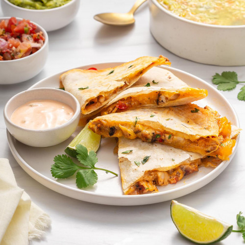

Homemade Quesadilla

This is a special homemade chicken quesadilla recipe.
Ingredients
- Chicken: Of course, you'll need chicken! This recipe calls for a pound of diced boneless, skinless chicken breasts.
- Seasonings:Use store-bought fajita seasoning or make your own spice blend at home.
- Vegetables:You’ll need green bell peppers, red bell peppers, and an onion.
- Tortillas:For 10 chicken quesadillas, you’ll need 10 flour tortillas. Use store-bought or homemade tortillas.
- Cheese:A blend of shredded Cheddar and shredded Monterey Jack takes the quesadillas up a notch.
- Bacon: Bacon bits lend a burst of savory, meaty texture to the cheesy chicken quesadilla filling. For a more traditional dish, you can easily omit the bacon bits.
Steps
- Season the chicken, then broil it until it’s cooked through.
- Cook the vegetables with the broiled chicken.
- Layer the mixture onto half of the tortilla, then top with cheese and bacon.
- Fold the tortillas and bake until the cheese is melted.
- Cut the quesadillas into wedges.